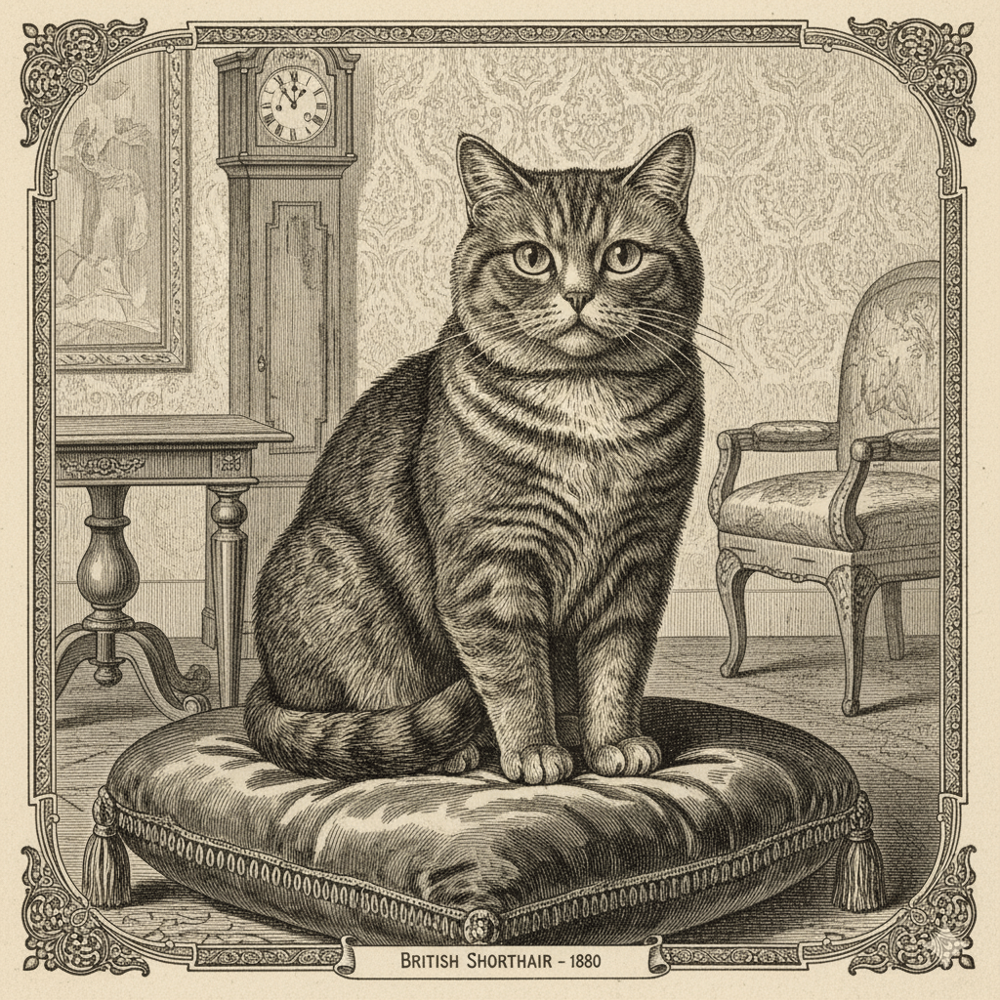
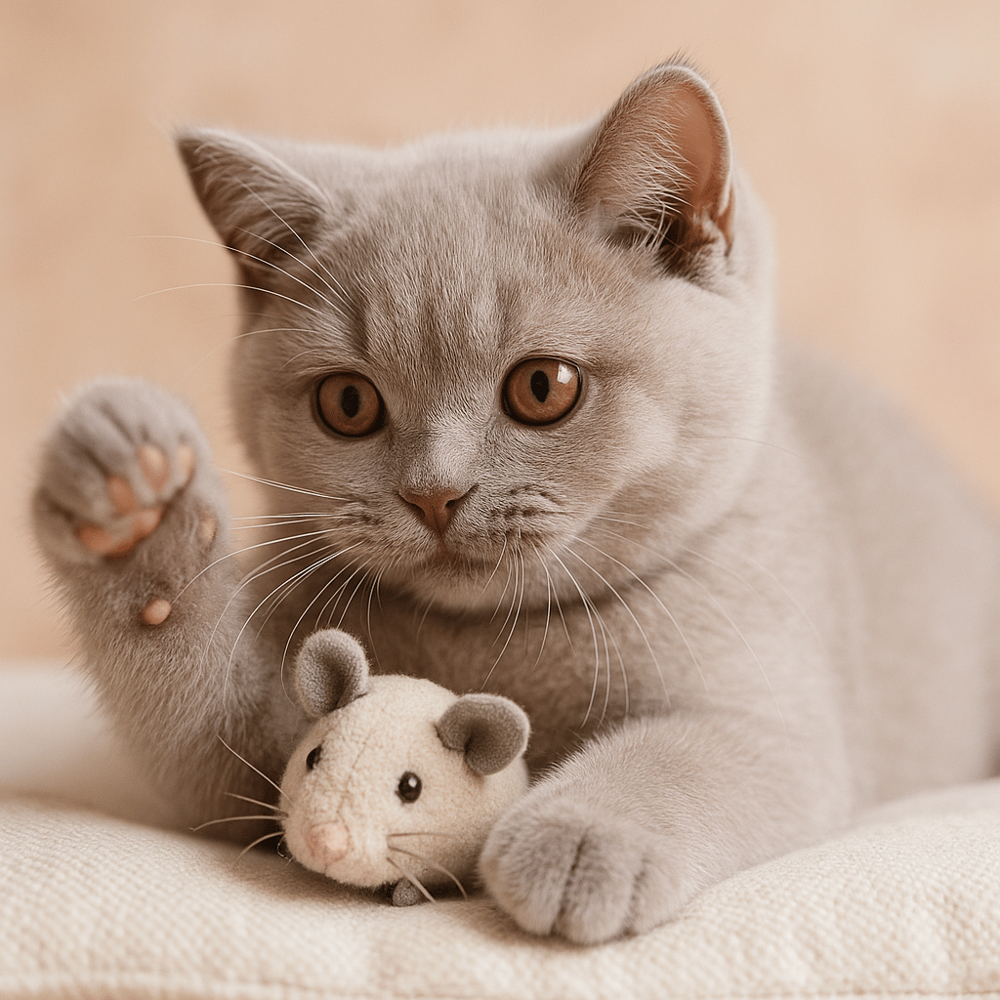

Die Britisch Kurzhaar (BKH) ist nicht nur eine Katze, sie ist ein Statement. Mit ihrem plüschigen Fell, den großen, ausdrucksstarken Augen und dem charakteristischen runden Kopf hat sie sich in die Herzen von Katzenliebhabern auf der ganzen Welt geschlichen. Diese Rasse verkörpert eine Mischung aus Adel, Gelassenheit und einem Hauch von britischem Charme. Doch was macht die BKH so besonders und warum ist sie eine der beliebtesten Katzenrassen?
Herkunft und Geschichte: Eine alte Rasse mit neuem Glanz
Die Geschichte der Britisch Kurzhaar reicht weit zurück. Es wird angenommen, dass ihre Vorfahren bereits mit den Römern nach Großbritannien kamen und sich dort an das raue Klima anpassten. Über Jahrhunderte entwickelten sie sich zu robusten, kurzhaarigen Katzen, die für ihre Stärke und ihre Fähigkeiten als Mäusejäger bekannt waren. Im 19. Jahrhundert begann die gezielte Zucht, und 1871 wurde die BKH erstmals auf der ersten Katzenausstellung im Londoner Crystal Palace vorgestellt.
Nach den Weltkriegen, die die Rasse beinahe auslöschten, wurde die BKH mit anderen Rassen, darunter Perser und Kartäuser, gekreuzt, um den Genpool zu erweitern und die typischen Merkmale zu festigen. Das Ergebnis ist die BKH, die wir heute kennen und lieben: eine imposante, kräftige Katze mit einem unwiderstehlich charmanten Aussehen.
Aussehen: Plüschiger Charme und runde Formen
Das auffälligste Merkmal der BKH ist zweifellos ihr dichtes, plüschiges Fell, das an einen Teddybären erinnert. Es ist kurz, dicht und fühlt sich wunderbar weich an. Die Farbpalette ist unglaublich vielfältig und reicht von den klassischen Blautönen über Cremefarben, Lilac (wie unsere wunderschöne Lilac-Katze auf dem Teaserbild), Zimt, Fawn bis hin zu Black, White und Chocolate, sowie verschiedenen Mustern wie Tabby oder Bicolor. Jede Farbe hat ihren eigenen Reiz, aber die Lilac-Variante besticht durch ihren zarten, graubraunen Ton mit einem Hauch von Rosa, der besonders edel wirkt.
Neben dem Fell sind es die runden Formen, die die BKH so unverwechselbar machen: ein runder Kopf mit vollen Wangen, runde, große Augen (oft in Kupfer oder Goldtönen, passend zum Lilac-Fell), kleine, weit auseinanderstehende Ohren und ein kräftiger, muskulöser Körper mit kurzen, stämmigen Beinen und runden Pfoten. Der Schwanz ist mittellang und am Ende leicht abgerundet. Insgesamt strahlt die BKH eine robuste, aber gleichzeitig sanfte Präsenz aus.

Charakter: Der sanfte Riese
Trotz ihres kräftigen Körperbaus ist die Britisch Kurzhaar bekannt für ihr außergewöhnlich sanftes und ausgeglichenes Wesen. Sie sind die "Gentlemen" und "Ladies" unter den Katzen. BKHs sind in der Regel ruhig, geduldig und nicht besonders gesprächig – lautes Miauen gehört nicht zu ihren Eigenheiten. Sie sind keine Draufgänger, die an den Vorhängen hochklettern oder ständig herumtoben.
Stattdessen genießen sie die Gesellschaft ihrer Menschen, ohne aufdringlich zu sein. Sie lieben es, in der Nähe zu sein, auf dem Sofa zu dösen oder leise schnurrend auf dem Schoß zu sitzen. Ihre Gelassenheit macht sie zu idealen Familienkatzen, die gut mit Kindern und anderen Haustieren zurechtkommen. Sie sind anpassungsfähig und fühlen sich sowohl in Wohnungen als auch in Häusern mit gesichertem Freigang wohl. Ihre Intelligenz zeigt sich oft in einer gewissen Beobachtungsgabe und der Fähigkeit, sich schnell an neue Situationen anzupassen.
Pflege und Gesundheit: Ein pflegeleichter Gefährte
Die Pflege einer BKH ist vergleichsweise unkompliziert. Ihr kurzes, dichtes Fell benötigt nicht viel Aufwand. Regelmäßiges Bürsten, etwa ein- bis zweimal pro Woche, reicht aus, um lose Haare zu entfernen und Verfilzungen vorzubeugen, besonders während des Fellwechsels. Eine gesunde Ernährung ist, wie bei jeder Katze, essentiell. Hochwertiges Futter, das reich an Proteinen und arm an Füllstoffen ist, unterstützt ihr kräftiges Wachstum und ihr glänzendes Fell.
Obwohl die BKH im Allgemeinen eine robuste Rasse ist, gibt es einige rassespezifische Krankheiten, auf die man achten sollte. Dazu gehören die Hypertrophe Kardiomyopathie (HCM), eine Herzerkrankung, und die Polyzystische Nierenerkrankung (PKD), eine Nierenerkrankung. Seriöse Züchter lassen ihre Zuchttiere auf diese Krankheiten testen, um das Risiko für Nachkommen zu minimieren. Regelmäßige Tierarztbesuche und Impfungen sind natürlich auch für die BKH unerlässlich.
Eine Bereicherung für jedes Zuhause
Die Britisch Kurzhaar ist mehr als nur ein Haustier; sie ist ein liebevolles Familienmitglied, das Ruhe und Schönheit in den Alltag bringt. Ihre Anpassungsfähigkeit, ihr freundliches Wesen und ihre unkomplizierte Art machen sie zu einem idealen Begleiter für viele Lebenssituationen. Ob du ein ruhiges Zuhause suchst oder einen geduldigen Spielkameraden für deine Kinder – eine BKH wird dein Leben mit ihrer stillen Eleganz und ihren sanften Schnurr-Momenten bereichern.
Wenn du überlegst, eine BKH in dein Leben zu holen, achte darauf, einen verantwortungsbewussten Züchter zu wählen, der die Gesundheit und das Wohl seiner Tiere an erste Stelle setzt. Dann steht einer langen und glücklichen Zeit mit deinem plüschigen Briten nichts mehr im Wege!
Zurück zur Startseite